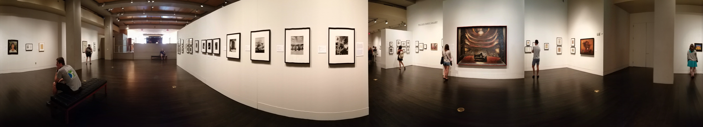

Site Visit
Harry Ransom Center
Interactive Museum Experience
Project Overview
Methods Used: Contextual Interviews, Usability Testing, Rapid PrototypingTools Used: Sketch, Invision
Group Members: Bria Fowler, Serena Mistry, Tim Salau
Project Duration: Sep. 2017 - Present (In Progress)
Our Task
This project is based on an upcoming exhibit for the Harry Ransom Center ("HRC") covering the Arts and Crafts Movement of the late 1800's and early 1900's. Many of the items are print materials that do not provide an interactive experience for visitors. Our Rapid Prototyping class was tasked with determining how technology could best be integrated to provide a more interactive and immersive experience.Our Solution
We developed a multi-faceted solution that provides engaging elements for visitors while not detracting from the museum experience. Providing each visitor with an RFID wristband allows them to "tag" objects to learn more about them later and to experience personalized augmented reality and interactive experiences. Using a wristband instead of a smartphone app or similar solution allows visitors to remain immersed in the exhibit. Graphic design by Serena Mistry, layout edited by Dixie Hamilton
Graphic design by Serena Mistry, layout edited by Dixie Hamilton
Our Process
Initial Research: Site Visit and InterviewsOur class was provided with existing research, including archetypes and personas. Our group chose to focus on the "Weekender" archetype: a person who is familiar with the topic of the exhibit and who likes to explore and learn about each object.
We visited the HRC to better understand the space and the Weekender archetype. We observed visitors and performed intercept interviews with five people who appeared to fit the Weekender description. Outside of the HRC, we also spoke with several museum-go-ers who shared insights on interactive exhibits they had experienced. From our interviews we took away several important insights:
- One woman did not want to use her phone for enhanced museum experiences so she would not be distracted by texts, emails, etc.
- Another person had ignored phone-based interactive elements at museums in the past because she wanted to remain immersed in the exhibit.
- One person shared that she appreciates museums with online exhibitions so after a museum visit she can share her favorite objects with friends and family instead of taking pictures
- Wants more information to learn more about the objects
- Exhibit items are not interactive and engaging
- Forgets what was learned after leaving
- Unable to share experience with friends/family not in attendance
Mapping the Experience
Journey Map
With our journey map and pain points for the Weekender in mind, we were inspired by Disney's Magic Band to use a wristband as the means for visitor interaction. A RFID-enabled wristband could enable a visitor to interact with the exhibit while not being distracted by a smartphone or other device. Additionally, the HRC could provide iPads at selected objects so users can engage with augmented reality experiences and fun, interactive quizzes based on the exhibit topic. Our solution incorporates both the wristband and an app for the iPads.
Our solution focused on key interactions provided by the wristband that would address the Weekender's pain points:
- Ability to tag exhibit items to obtain more detailed information about them later.
- Ability to share information about your favorite items with friends and family without having to take pictures.
- Interaction with augmented reality and interactive quizzes via iPads provides a more engaging experience than the exhibit objects alone (of which most are printed materials).
- The wristband is accessible for everyone in that visitors are not required to have a smartphone and the ability to download an app.
- The tagging of objects via the wristband would provide data to the HRC to help them understand which objects people liked the most.
- The HRC could provide additional information about the exhibit and objects after someone's visit, including related items that were not able to be obtained for the exhibit, and notifying visitors that books they enjoyed are available for in-person reading at the HRC.
- The ability to tag objects could lessen the amount of visitors taking photographs of objects, which is not allowed.
After receiving positive feedback on our concept, we prototyped the experience to obtain more detailed feedback. Given the short timeframe for this project, we used a convenience sample of fellow students in the School of Information for our testing. We created low fidelity versions of the:
- wristband
- iPad welcome screen for explaining the wristband to visitors
- iPad app for augmented reality and interactive quiz experiences
Participant Testing the "iPad" Welcome Screen
Mockup of a Painting and Button for Tagging (formerly called "pinning")
Participant Giving Feedback
Even our low fidelity museum experience resulted in participants providing valuable insights. While all four participants understood and liked the concept of tagging items to learn more about them later, other potential issues were uncovered:
- The word "Pin" as a descriptor for tagging favorite objects was confusing to some participants.
- The button/device for tagging objects needs to be placed at a height that is accessible for most people, including visitors in wheelchairs.
- The button/device for tagging objects needs to provide visitors with "feedback" to show that the item has been successfully tagged.
- A "Leaderboard" that showed visitors with the highest quiz scores was unneeded, or a "nice-to-have".